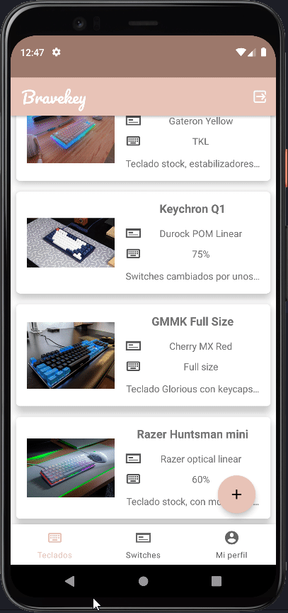
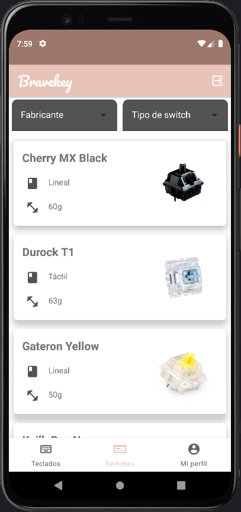
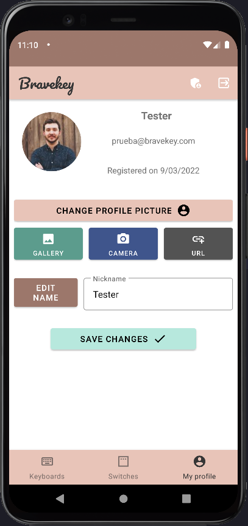

Bravekey es una app de Android basada en Kotlin que permite a los usuarios
mantener un registro de sus teclados guardados, con todo tipo de detalles.
Desde la placa base, hasta los switches mecánicos utilizados y las modificaciones realizadas, Bravekey es el mejor
sitio para almacenar tu colección de manera simple.
Esta app utiliza Firebase para el manejo de usuarios y para la base de datos.
Gracias a esto los usuarios podrán almacenar su imagen y sus teclados siempre que
dispongan de una conexión a internet.
En las siguientes capturas se pueden ver las
secciones principales de la aplicación:
Lista personal y simple
Actualizada por los admins
Ajustes de tu cuenta
